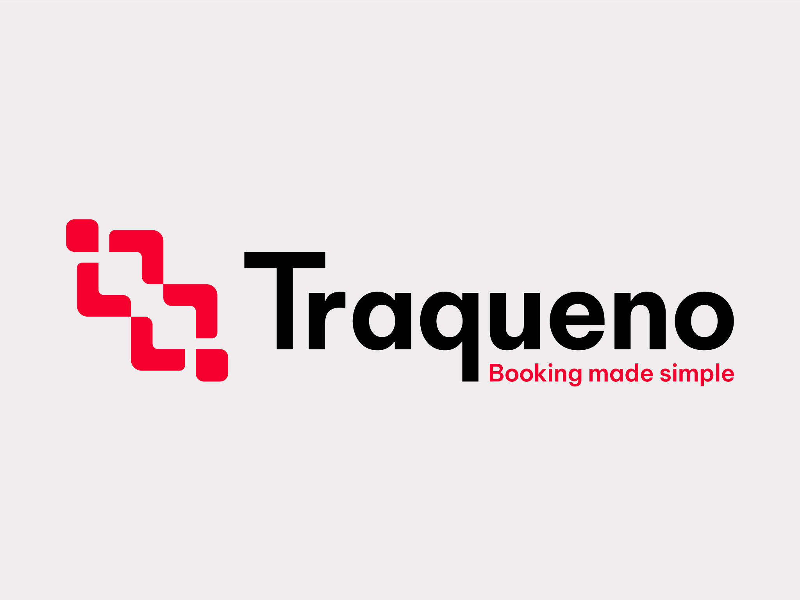
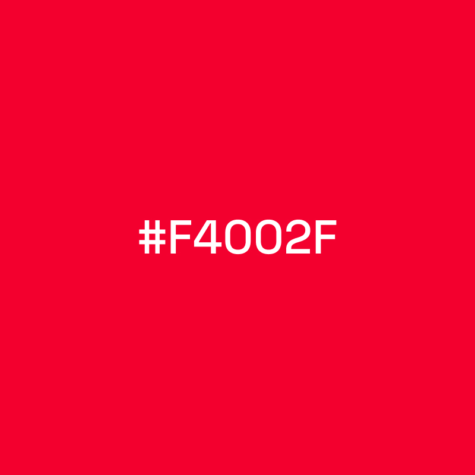
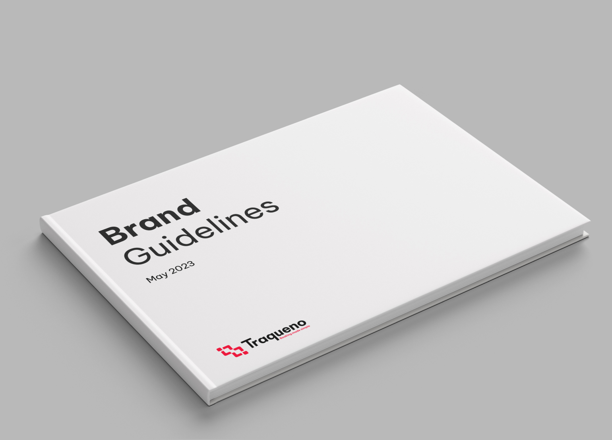
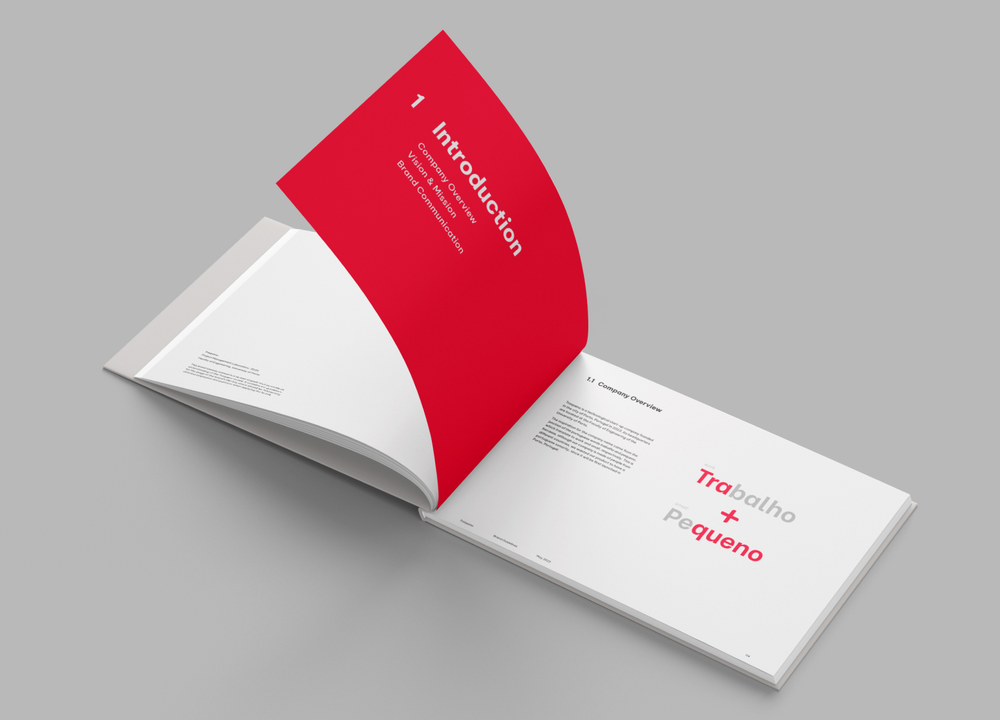
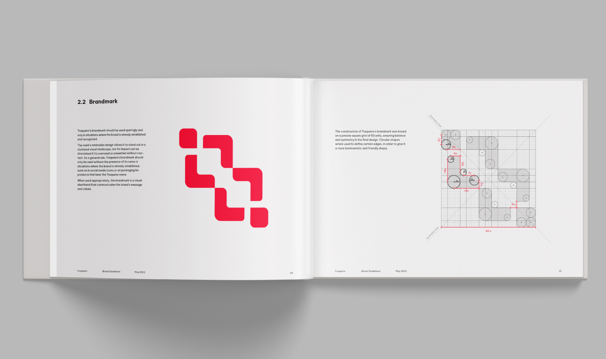
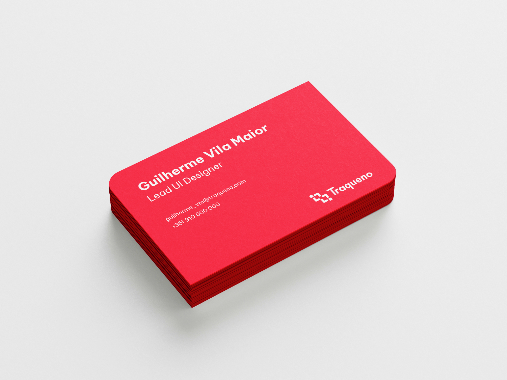
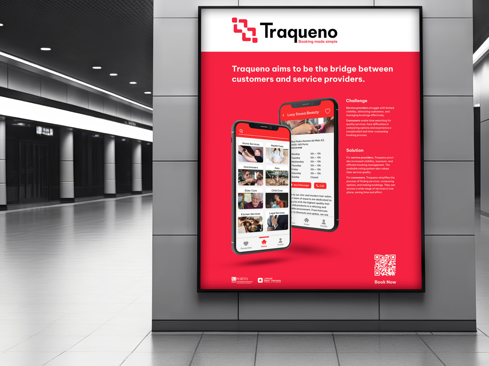
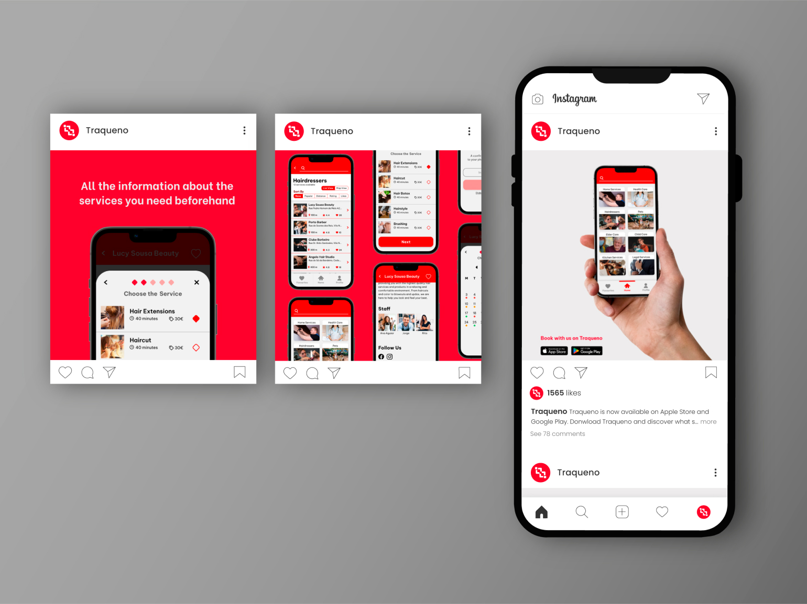
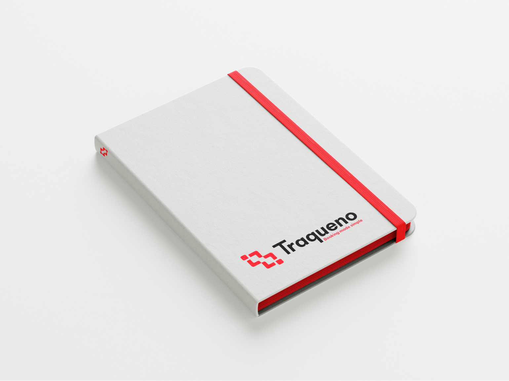

The concept behind Traqueno’s logo comes from the brand’s mission and ambition to connect service providers and clients. This relation is illustrated in a minimalist symbol composed of two shapes coming together, each representing a different group. These two shapes are seamlessly integrated, signifying Traqueno's ability to bridge the gap between service providers and clients.
Traqueno
February 2023 – July 2023
Traqueno was a start‑up company created in the Project Management Laboratory course at the Faculty of Engineering, University of Porto. The company's mission was to be the bridge that connected customers and service providers through its application. As the company’s Head Designer I was responsible for creating its corporate visual identity.
- Branding
Academic Project
Multimedia Master Degree, Faculty of Engineering University of Porto
Design Tools
- Adobe Illustrator

Logo Concept
Color Palette
The primary color of Traqueno is a vibrant shade of red, conveying warmth and creating a sense of connection with the app users. The color palette also incorporates a light gray, adding a touch of modernity and sophistication to the brand, while black provides a strong contrast.

Typography
Traqueno communicates through the font family Be Vietnam Pro. This typography was chosen for its modern look and readability, that reflects the company's forward‑thinking mindset. The font's sleek and minimalist design allows for clear and concise messaging, which is important for a brand that emphasizes efficiency and convenience. This family’s large variety of weights allows Traqueno’s identity more versatility and adaptability.
Brand Manual



![A double-page spread from the Traqueno brand guidelines, showcasing the logotype in various color and black and white versions. On the left page, titled '3.2 Logo Colored Variants,' two logotype variations are displayed: a black and red primary version over white and a white secondary version over red. On the right page, titled '3.2 Logo Black and White,' two logotype variations are shown: a black logotype on a white background and a white logotype on a black background. Each logo features the Traqueno wordmark and the brandmark.](../img/traqueno-asset-11.jpg)
Identity Applications



